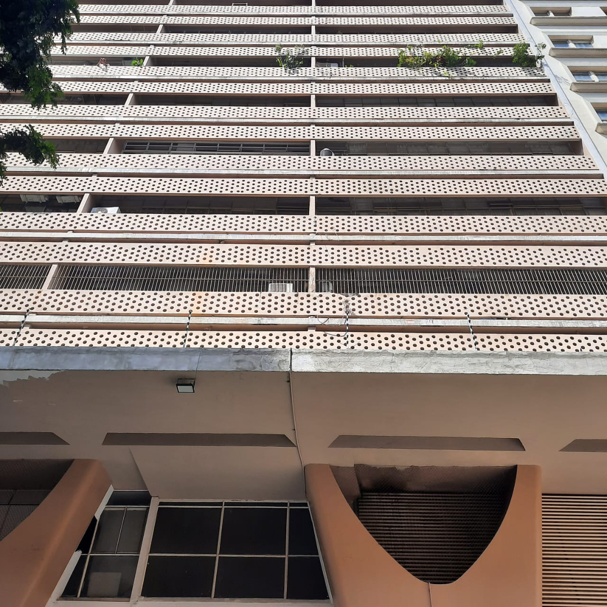

01 / HABILITAÇÃO
Primeira habilitação
Avaliação psicológica para candidatos à primeira habilitação, com aplicação do Teste Palográfico e demais procedimentos necessários.
Consultar atendimento ↗Avaliações psicológicas e atendimento especializado para quem está começando a dirigir, para quem vive do trânsito e para empresas que cuidam de seus condutores.
A Casa do Condutor atua há mais de 3 anos oferecendo atendimento especializado na área de Psicologia do Trânsito. A clínica nasceu com foco na primeira habilitação, atendendo candidatos encaminhados pelo Detran, e ampliou sua atuação para estar ainda mais próxima dos motoristas e das empresas.
Nossa proposta é construir relações de confiança, oferecendo atendimento especializado, comodidade e soluções que contribuam para uma rotina mais segura e organizada.
Orientação e avaliação psicológica conduzidas com atenção às necessidades de cada processo.
Avaliação psicológica para candidatos à primeira habilitação, com aplicação do Teste Palográfico e demais procedimentos necessários.
Consultar atendimento ↗Avaliações psicológicas relacionadas aos processos de trânsito, realizadas por profissionais com experiência na área.
Tire suas dúvidas ↗Avaliação psicológica e emissão de laudo para processos relacionados a Colecionador, Atirador e Caçador, conforme os procedimentos exigidos.
Consultar informações ↗A clínica utiliza instrumentos e testes psicológicos de acordo com a necessidade de cada avaliação, incluindo o Teste Palográfico e o Teste de Pfister, entre outros recursos quando necessários.
Conheça os profissionais ↗Formada em Psicologia pela Universidade Braz Cubas em 1982, com especialização em Psicologia do Trânsito. Reúne experiência clínica, hospitalar, em seleção e avaliação psicológica.
Psicólogo, Técnico de Segurança do Trabalho e Instrutor de Trânsito. Atua como Agente de Trânsito na CET desde 2008.
Uma parceria pensada para facilitar a rotina dos condutores e contribuir para uma operação mais segura. Empresas podem indicar seus colaboradores e negociar condições diferenciadas conforme a parceria.
Ambientes para atendimento individual e avaliações, em uma localização central e de fácil acesso.



Em uma região estratégica, a poucos metros do metrô República. Um endereço central para facilitar o acesso de condutores e empresas.
Se sua pergunta não estiver aqui, fale diretamente com nossa equipe.
Falar com a equipe ↗A Casa do Condutor apresenta atendimento para primeira habilitação, avaliações em Psicologia do Trânsito e avaliação psicológica para processos CAC. Consulte a equipe para entender os procedimentos do seu caso.
Na Rua Barão de Itapetininga, 255, Sala 507, República, São Paulo/SP, a poucos metros da estação República do metrô.
Sim. A clínica busca parcerias com empresas que possuem motoristas em sua operação. Condições e facilidades são negociadas conforme cada parceria.
As parcerias podem oferecer condições especiais, facilidades de pagamento e uma palestra gratuita para os colaboradores, com tema escolhido entre direção defensiva e cidadania no trânsito.
Entre em contato pelo WhatsApp ou pelo e-mail informado nesta página. A equipe poderá orientar sobre o serviço, documentos e disponibilidade.
Fale com a Casa do Condutor e encontre a orientação que você precisa.